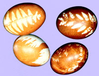
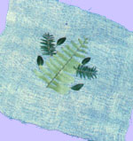
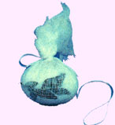

To do so, you'll need some homemade dyes (I get the best results using onion skins), cotton, cheesecloth, string, and a selection of green leaves and colorful flowers.
The most common foliage available around Easter time will-depending upon your location-probably be the leaves of roses, violets, columbine, parsley, wild carrots, clover, and ferns . . . but any attractive small leaves work well. (You can usually find leatherleaf fern scraps and chrysanthemum leaves among florist shop discards.)
I haven't experimented very much with flowers, but I have found that hyacinths, violets, bluebells, and lilacs will-when used in the manner described below-often leave some hint of their colors on the eggs.
Once your materials are together, put the onion skins (or other dye source) into a pot and cover them with water. (Both my mother and my grandmother swear a granite kettle is best for this purpose.) Bring the water to a boil and let the liquid cook a little until it turns brown. Then, clean off the eggs and cut the cheesecloth into pieces large enough to be wrapped about a single Easter treat, twisted, and tied with a string.
Lay one square of the material flat out on a table and arrange the leaves and/or flowers on the cloth . . . keeping in mind how the "decorations" will be positioned when the wrapper is folded about the egg.
Now, being very careful not to wrinkle the foliage, pull the cheesecloth tightly together at the top . . . twist the corners a little bit . . . and then tie the material securely in place. (The idea is to have the greenery held so tightly against the eggs that the dye solution won't touch the protected portion of the shell.)
Next, put the little packets in the dye bath (be sure the liquid covers them) and bring the water to a boil for about 10 minutes . . . cooking and dying the eggs in one step.
When you remove the Easter symbols from the water, cut the string so you can reuse your cheesecloth for other eggs. Let the decorations cool till they can be comfortably handled, then enhance their beauty by giving them a glossy finish: Just rub a little butter, margarine, lard, or oil on your hands . . . and coat the eggs with it.
As you can see, homegrown Easter designs will be limited only by your sources of leaves and flowers and your imagination in placing them. For example, this year I plan to fill my basket with a collection of eggs . . . each one imprinted with a different herb!
|
 STAFF PHOTOS |
 |
 |